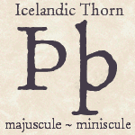

The Thorny Old Ye
The Runic Thorn

The thorn starts with a Runic character
which has a “th” sound. It looked much like our modern letter
“p” but made with straight lines. The straight lines were probably
adopted because of ease of carving into stone and wood. In time, the Runic thorn
transitioned to the handwritten letter and came to be known as the Anglo-Saxon thorn.
Today, we can see it as used in the modern
Icelandic alphabet.
The “English” Thorn

During 1454-55, Johannes Gutenberg printed
his famous Bible with movable type, thus making obsolete the handwritten books of his age.
In 1476, William Caxon set up a printing press at Westminster England. Caxton and other early
English printers purchased movable type from the Continent. It is said that the purchased
type sets did not contain the character “thorn.” So they used the letter
“y” to fill the gap in the type set and the English “y” became
an adaptated “thorn.” The superscript ending letter (or letters) finished the word,
such as the “ye” which is pronounced
“the”
If the “y” word ended with a
“t” or an “at” (“yt”
or “yat”) we would have “that.”
An underscore or dot written under the ending
superscripted letter(s) is not significant. Also, not all writers superscripted the
ending letter(s).
Printed thorns generally were not used in
Middle English works after 1600. However, manuscripts, documents, and letters
continued to use the thorn for perhaps another 125 years.
An Oldtime Example of
“ye”
“... ye sayd
Samuel being a bristall man came over into this Country with his wife som time
after ye Wars ended to settle in Corke and
follow ye Cooping trade and although he
was observed to be a Laborious painful man ye
world favoured him not with success.”
Modernized Version
... the said Samuel being a Bristol England man
came over into this Country Ireland with his wife some time after
the Wars ended to settle in Cork and
follow the Barrel making trade and although he was
observed to be a Laborious painful man the world
favoured him not with success.
So When is a Ye not
a Ye?
Answer: when “the” is “you.” Two
versions from the Bible:
“Ye are my friends if ye do whatsoever I command you.” and
“You are my friends if you do whatsoever I command you.” --John, 15-14.
Note:
In Old English
ye was used only as a nominative, and
you only as a dative or objective. In the 16th century,
however, ye and you became confused and were often used
interchangeably, both as nominatives and objectives,
and you has now superseded ye except in solemn or
poetic use.
| |